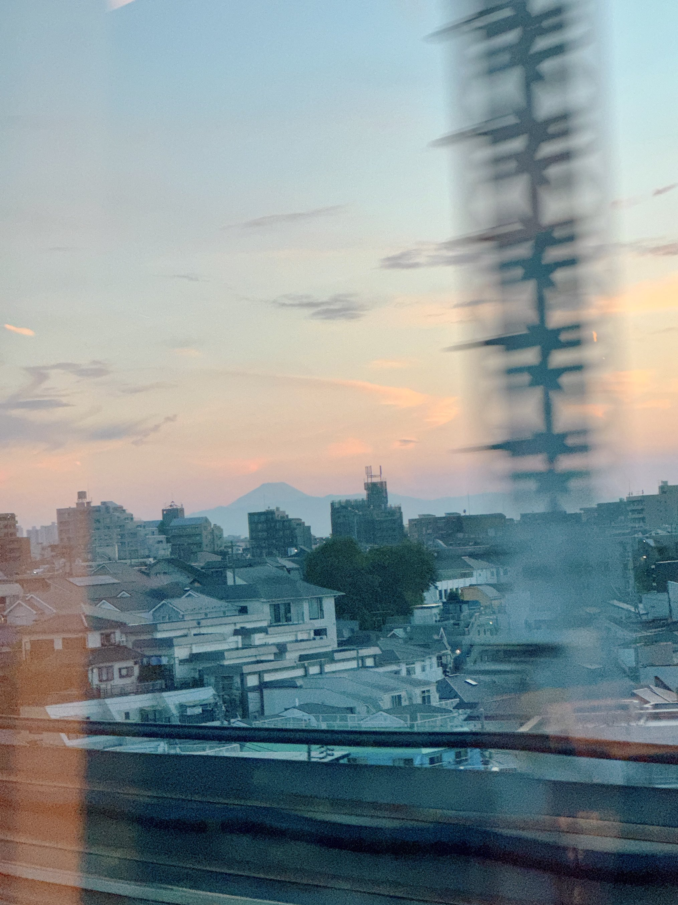

TOKAIDO SHINKANSEN WINDOW VIEW
When can you see Mt. Fuji from Ota from the Shinkansen?
The first Fuji after Tokyo.

- Section
- Shinagawa → Shin-Yokohama
- Seat side
- Seat E · mountain side
- Timing
- About 10 minutes after leaving Tokyo on a Nozomi train
- Photos
- 1 photos
View on map
Opening the map connects to OpenStreetMap.
How to find Mt. Fuji from Ota
After Shinagawa, on the way toward Shin-Yokohama, Mt. Fuji can appear from around Ota on especially clear days. This is not the big Fuji near Shin-Fuji; it is a small early sign beyond the city. If you catch it, the journey starts with a quiet reward.
If you are traveling from Tokyo toward Shin-Osaka, start watching the Seat E · mountain side window as you approach Shinagawa → Shin-Yokohama. If you are traveling toward Tokyo, the order is reversed.
Why this view matters
Mt. Fuji from Ota is one of the window views that make the Tokaido Shinkansen more than a transfer. The train moves fast, so visibility depends on weather, seat position, and timing.